A Cozy Gift Idea
 Do you have a sweater (or two) hiding deep in your closet that has seen better days? Does it have a snag, a stain, too big or too small? Perhaps it holds some memory, whether it was something spectacular, momentous, wonderful, or unusual that happened while you were wearing it? And you just can’t let it go…
Do you have a sweater (or two) hiding deep in your closet that has seen better days? Does it have a snag, a stain, too big or too small? Perhaps it holds some memory, whether it was something spectacular, momentous, wonderful, or unusual that happened while you were wearing it? And you just can’t let it go…
I’m with you… to me; there’s nothing quite as comfy as curling up in an oversized sweater on a chilly day and sipping hot tea. Well, it’s time to up-cycle that favorite sweater and give it a new life. You can still enjoy that sweater, but instead of wrapping it around your shoulders, you will be wrapping your hands around it.
Mason Jar Cozies
Mason jar cozies are nothing new. I have been admiring them for a long time now. With my combined love for mason jars and cozy sweaters… I knew it was time to create my own.
As I started to do my homework, I quickly found out that a lot of people made them through the technique of crochet or knitting. Bummer, because I can’t do either. Not yet anyway, one day maybe I will learn! If anyone wants to teach this lefty… let me know! hehe
Here’s the fun part, you can make a cozy for just about anything, and you can use just about any fabric that you desire. Personally, I LOVE the look and feel of the sweater cozies. I even tinkered with some old fleece scarves that I had. Below you will see some photos of all the different styles that I made over the weekend. I had a color theme going so they are all in the same colors.
The beauty of mason jars is that since they are designed for canning, pouring hot liquids in them is perfectly safe! The cozy insulates the jar and protects your hands. It is also great in the summertime for keeping drinks cold and preventing your glass from sweating.
Using Felted Wool – Light Sewing Option
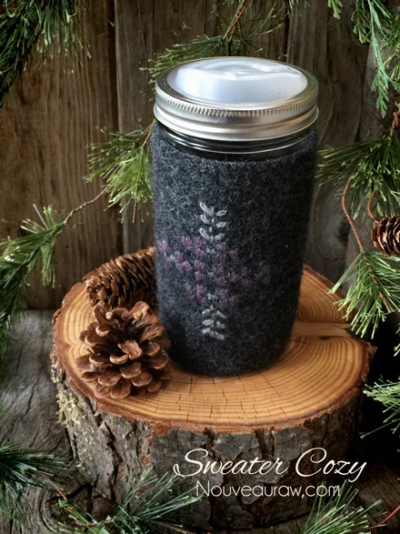
If you don’t own a sewing machine… that’s ok; you can still make them. One trick is to use wool sweaters and use a process called felting. Felting is a funky way to transform a knit or crochet sweater into something with an entirely different texture. It turns it into a dense strong knit.
Why is this so cool? Because once you felt a sweater, it won’t fray when you cut it, thus you won’t need to sew the edges. The bottom line… when the fibers of the wool are exposed to moisture, heat, and agitation, they cling and tangle together which causes them to shrink.
Felting allows you to cut the fabric and not have to hem it. The only sewing is up the side, and you can do that by hand with a needle and thread if need be.
There isn’t an exact science to felting. It will depend on the fibers and your washing machine. Read the label on the sweater and look for a blend that is 65% or higher in wool content to get the best results. There are times a knit just won’t felt, so another indicator to test to see if a sweater is a good candidate is to stretch it in your hands. The looser the weave, the fewer chances it has of felting.
I had to laugh because last week I bought this gorgeous green, wool, vest sweater at the local thrift store. I couldn’t wait to get it home so I could felt it even further than what it had already been. (guessing the previous owner accidentally shrunk their sweater and then donated it haha). As I got ready to toss it into the washing machine, I thought to myself, “What the heck, try it on and see if it will fit.” It did, and now it hangs in my closet. Lol Anyway, here are the basic steps in felting…
Wash in hot water with soap. (soap speeds up the process)
- You can felt a sweater and wash another laundry with it. It is actually encouraged because the agitation of not only the machine but the other clothes will speed up the process). You can even add a pair of tennis shoes to the cycle to help with the agitation process.
- Rinse in cool water
- Rinsing in cool water “locks” the fibers in place. Most people have a warm wash/cool rinse setting on their machines (easy, huh?)
- Drying
- Use the hottest and longest setting for the drying process.
- Once done drying, inspect the weave of the sweater. Sometimes, it takes a few cycles.
- Remember: once felted, it is felted for life… there is no going back!
Tips I learned along the way:
- If sewing a thick sweater on a sewing machine, do not force the fabric through the feeder foot. Take it slow and easy. Forcing it will result in broken needles… I had bought three before I caught on. :) But do take note… some sweaters are just too darn thick for a sewing machine, especially when doubling the thickness to sew a hem.
- I found that if I cut the sweater up, along all the seams, it allowed me to lay all the pieces out flat so I could see what I had to work with. This allowed me to visualize how to get the most out of my sweater. Think about creative ways to use the pockets, prints, or other characteristics of the sweater into your cozy.
- Have several different sized jars on your workstation. Smaller scraps can work for smaller jars.
- If you are not using a wool felted sweater, all edges will require a hem. Most people use just the sleeves and the bottom of the sweater, but I found ways to use just about every inch of a sweater. :)
- If you want to embellish the cozy dig around in your craft room, look in your jewelry box for some ole’ trinkets, or visit your local craft store. The scrapbooking section has great selections.
- Use thread that matches the color of the sweater.
- Cozies should be snug to get on the jar. This is intentional. We don’t want the cozy to slide off or down when in use.
- I find that I like the 1 1/2 pint freezer-safe mason jar for cold drinks and the 1 pint for hot drinks.
So why all the fuss over cozies?
Protects your hands from hot and cold drinks. Keep drinks warmer / cooler. Built-in coaster to protect your wooden tables. We are recycling and reusing items that might otherwise be tossed. Extra bonus – screw the lid on for a handy, spill-proof travel mug. These make a great holiday gift, especially paired with a box of your favorite tea! The jars can make great candle holders as well.
_______________________________________________
I got the galvanized lid from Amazon The right lid is the “coppow lid” (here for wide mouth) and (here for regular). I found the embellishments at the craft store. The heart is actually for making a necklace, so don’t be afraid to think outside the box. :) The red cozy is made from the sleeve of a sweater. The gray one is made from the base of the sweater and folded over for added texture.
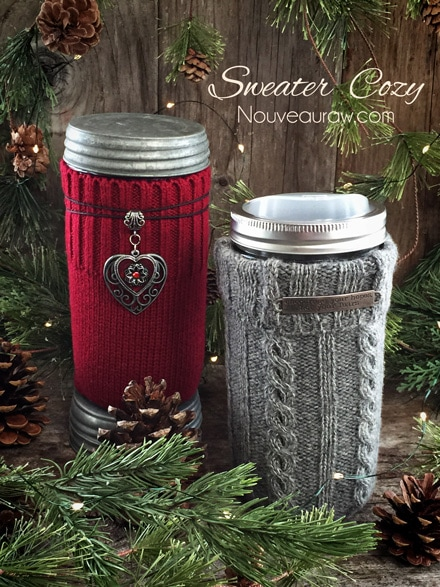
You can personalize a cozy gift with embellishments.
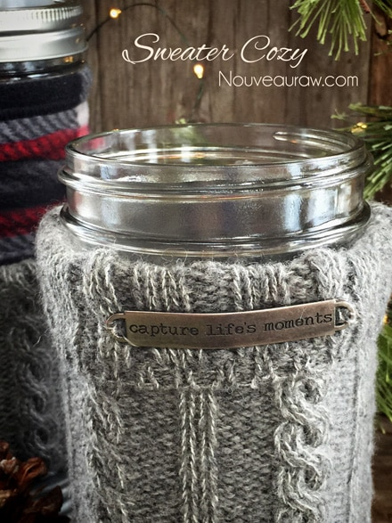
Don’t be afraid to mix fabric textures. For the left jar (old kombucha bottle) I used an old fleece scarf
(doesn’t require hemming by the way, since it doesn’t fray) and a gray sweater.
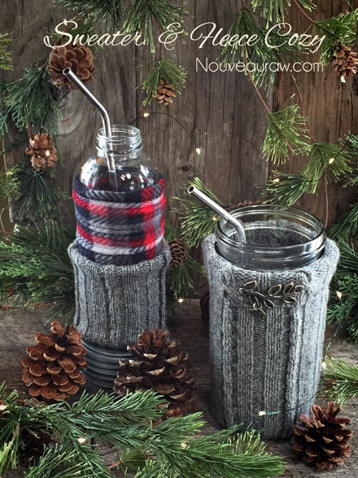
I used clear thread to sew the do-dads on.
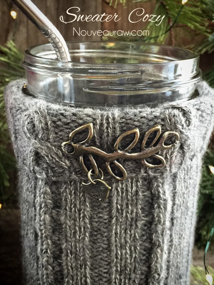
Steampunk accessories are great too.
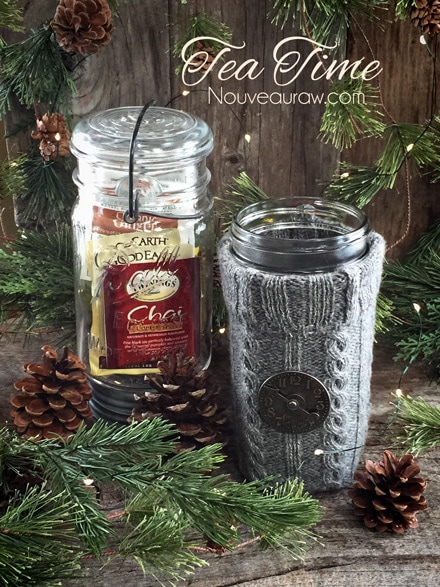
The small red cozy is from the sleeve of a sweater.
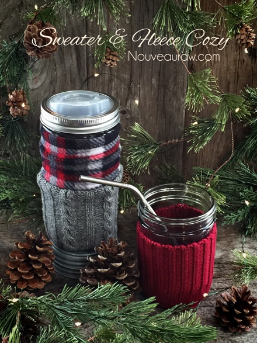
The lids below came from Amazon. They come in silver, red, black and a rust color.
They don’t fit wide-mouth jars though. The cozy on the right is again from an old
fleece scarf. I only had to sew one seam down the side, so easy.
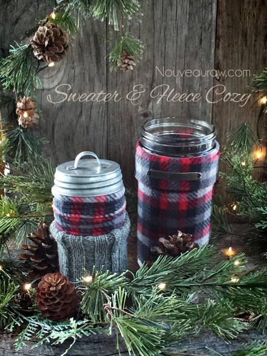
By using scrap pieces from cutting up the sweater, you can keep creating all sorts of different looks.
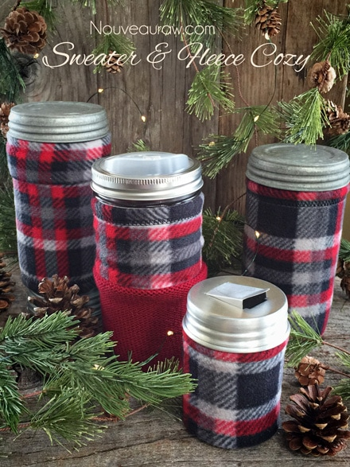
This lid is called a Mason Jar Aluminum Grain Dispenser Lid.
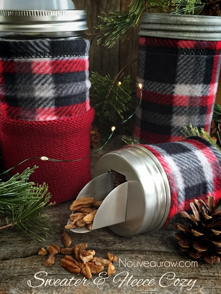
This is a half-gallon sized mason jar. Perfect for storing raw granolas!
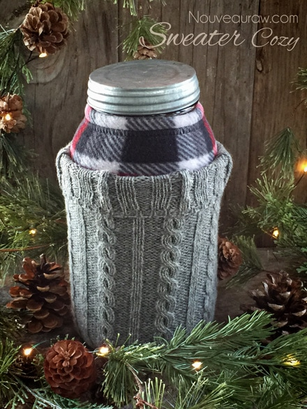
A sweet little pocket to hold a package of tea in.
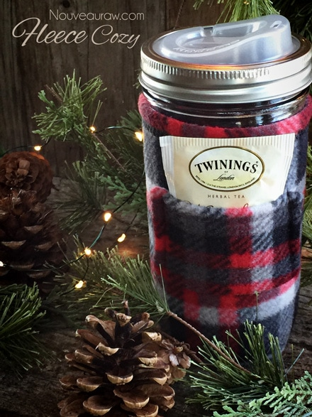
This is a three-tier storage bin. What a perfect gift. Load each layer up with raw granola,
cookies, kale chips… and so forth. I picked mine up at Cost Plus for $9.99.
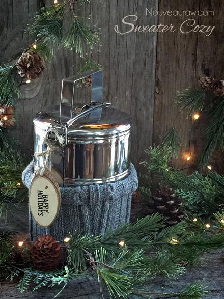
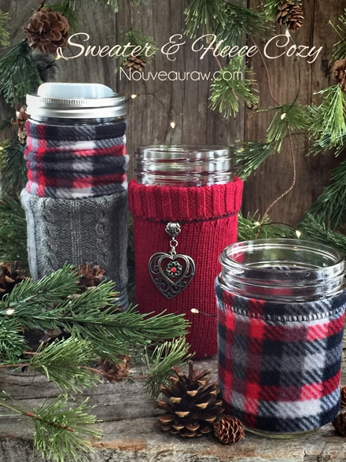
Just showing you that you can leave the bottom of the jar open.
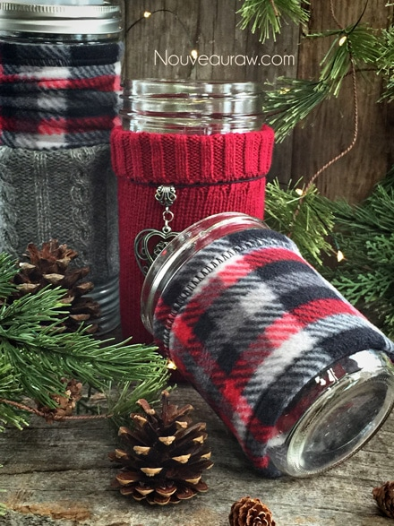
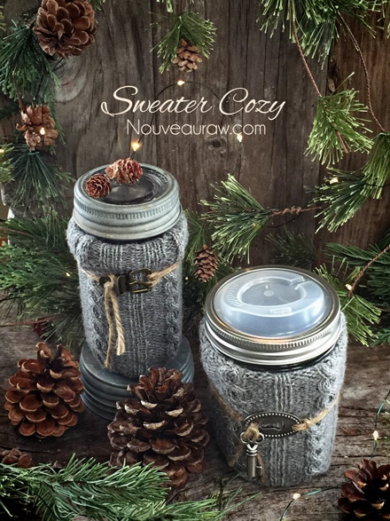
These sweet little gems are tea candle inserts that I found at Joanne’s Fabrics.
They run about $5.00 for 3 and fit a small-mouthed jar.
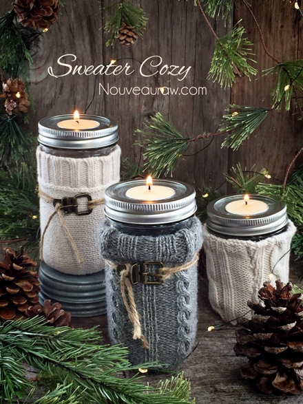
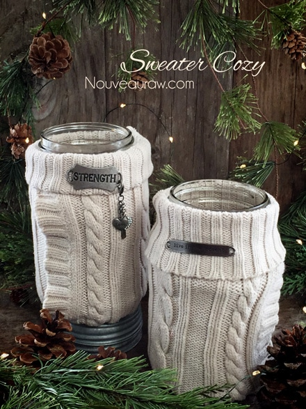
These jars are close to being my favorites. I can’t say that they are indeed my favorite
because, with each cozy I make, it becomes my favorite. Lol But seriously, I LOVE
this one because I was able to capture the pocket on the sweater and utilize it.
When you hold the jar/drink in your hand, you can slip your fingers into it, making it extra cozy. :)
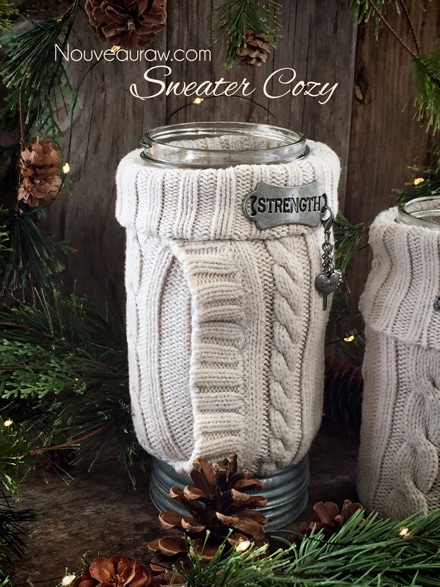
The next cozy was from the sleeve of the sweater.
I just had to sew the bottom and for an added snuggly look, I folded the cuff down.
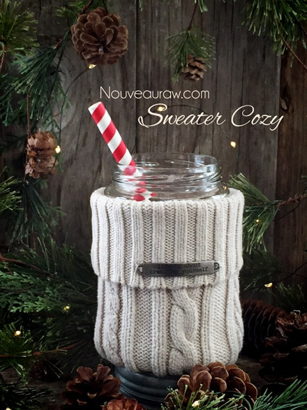
It soon became a joke in the house that if something sat still long enough, it would get cozy.
True enough. The bowl below is one on a pedestal, which I wrapped in thick twine to give it a
rustic look. I made this cozy from the bottom of the sweater, so I just had to sew the side
seam and then just sewed a gathering stitch on the bottom. So easy. I have so many
ideas for this dish. Use it as a candle holder, put kale chips it for a party, and so forth. Love it!
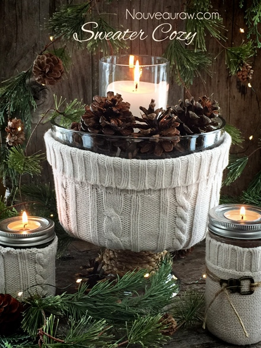
This would make a great gift combo, don’t you think?
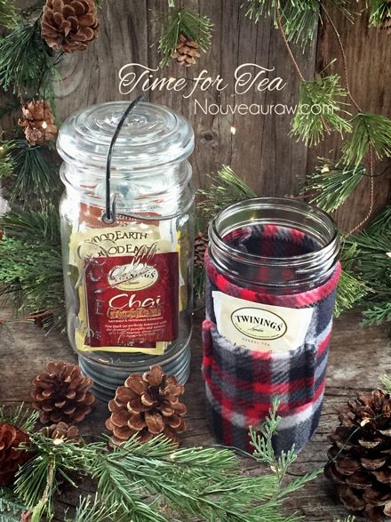
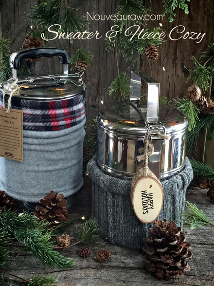
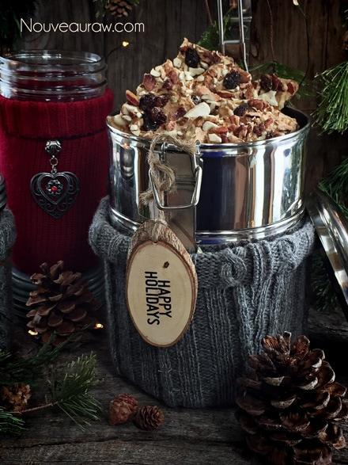
Here I am showcasing the small jar in the front of the photo.
It was a pickle jar of some sorts that has a bulbous bottom.
It sits so well in the palm of my hand as I sip my drink.
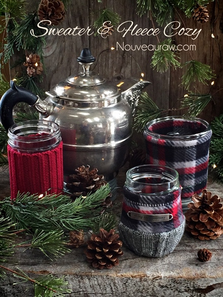
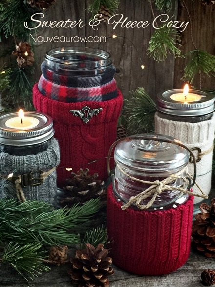
The left jar is a special one-gallon mason jar. You can find them at Target and Wal-Mart.
They range in price from $10 – $20. The right jar is just a simple cookie jar from Wal-Mart
that I picked up some time back for $7.99. Again, I just used various parts of the sweater.
The really neat feature about this particular sweater that I was able to use the inside and outside
of the fabric. This gave me some variety. You can look back at all the jars with this sweater fabric
on them and see the difference.
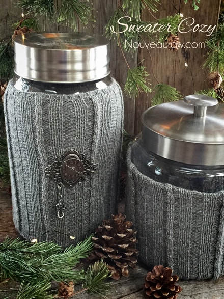
Here I made a cozy for an old milk bottle. You could do this with a wine bottle too.
It’s silly to list what you can cover in a cozy because it is about endless.
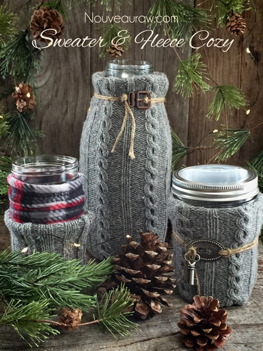
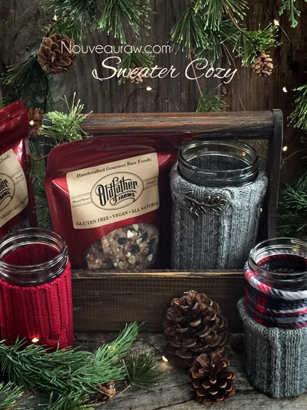
All of the above cozies were made from 1 SM red sweater, 1 XL gray sweater, and one
fleece scarf. Not so shabby.
Let’s take a small intermission break here…
The cozies below all came from this wool sweater that I felted.
I bought it second hand because someone must have accidentally washed it not
knowing that it would shrink up. Much to my benefit though! I washed it one more time
to tighten the fibers. When making cozies, I suggest dissecting the sweater by
cutting it along all the seams. Spend a little time looking it over and notice all the neat
things about it that can be featured on your jar. So, for instance, I first spot the pocket.
I am so going to use that. The bottom binding, the embroidery along the opening
(I had to cut out the zipper) and if you can see, there is a large embroidery pattern on
the back of the sweater. I will point it out further down. So let’s see what I made…
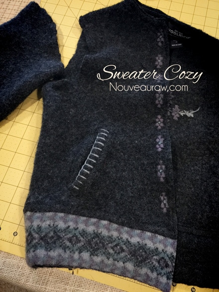
The sweater had two pockets, so I made two identical cozies.
Since I had two, I can show you that one jar has the pocket as well as
the embroidery part. These cozies don’t have bottoms because the fabric
layers were just too thick
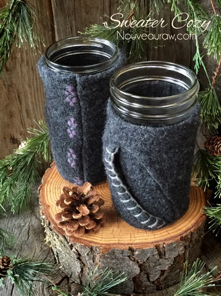
This cozy is made from part of the bottom of the sweater. I was able to three of these.
The only sewing that I had to do was the side seam. Due to the thickness of the material,
I had to hand sew it. It took all of 3 minutes.
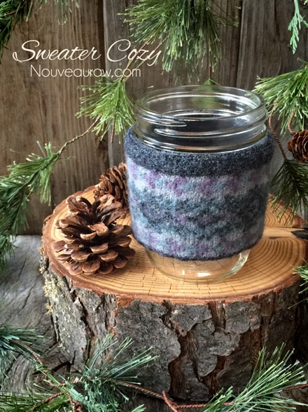
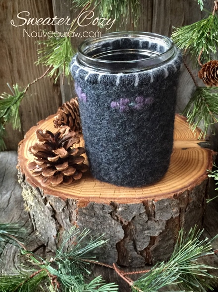
This cozy was made from a part in the middle of the sweater. It didn’t have any
fancy embellishing on it, and with the beauty of felted wool, I didn’t have to hem the
top or bottom. I dug into my bead kit that I usually use to make decorative
ink pens and found these beads.
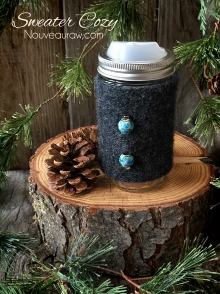
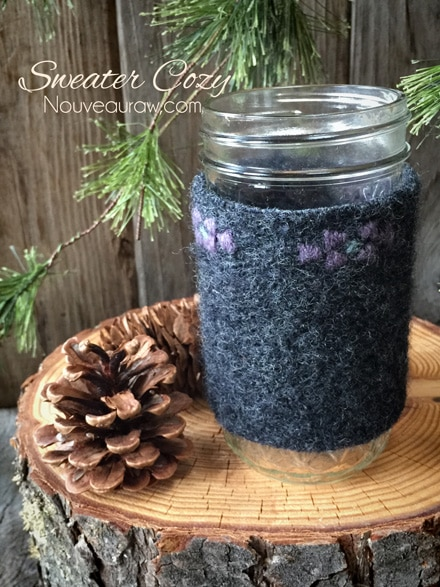
Remember when I mentioned that the back of the sweater had embroidery on it…
well, this is it. I cut it out and only need to sew up the side and then to sew the
bottom piece on. I have to say that I love working with felted wool. It feels so
“solid” and comfortable in my hand.
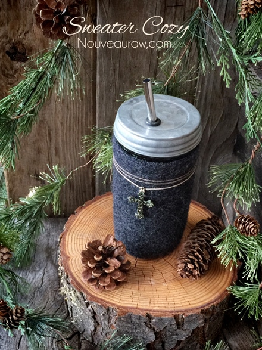
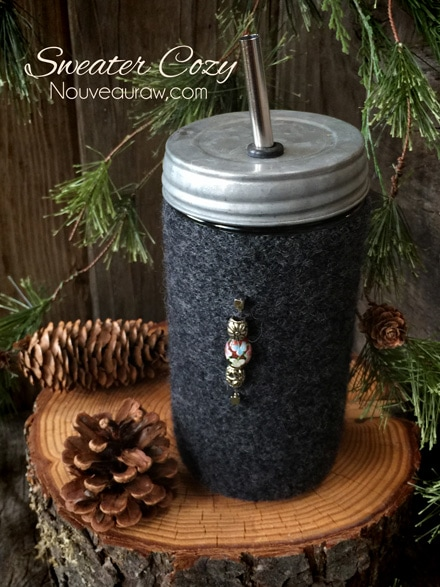
I made two of these. I used the end of the sleeves and let me tell you, it was a job
and a half getting them on the jar. When the sweater felted the cuffs REALLY
shrunk which is why I guess the original owner got rid of it.
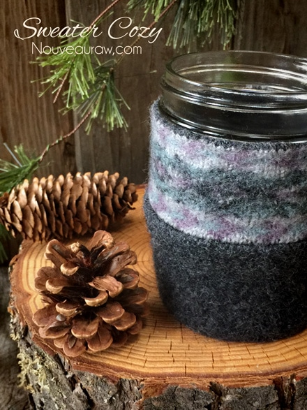
Shew! One sweater can provide you with a lot of cozies. I think I will start
wrapping this up for now. Trust me; I have more that I could share. lol
One more photo… Another felted wool sweater produced seven more cozies.
Here are some of the examples. No two look alike. So cool!
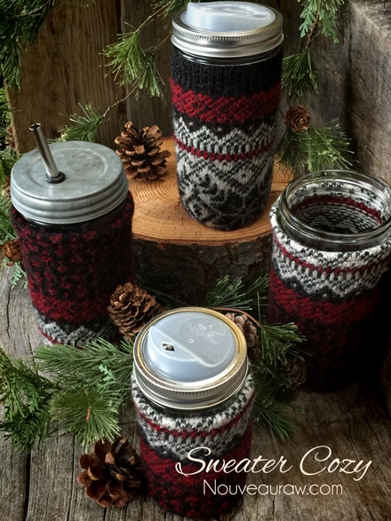
I applaud you for hanging in here this long. But I couldn’t let you go without
showing you how I went about making them, now could I?
You will need a jar, scissors, felt tip marker, and a sweater.
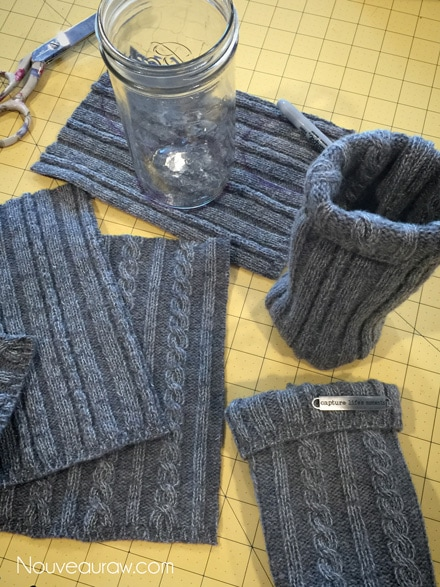
Place the jar on the sweater and trace around the bottom. Use the scrap pieces for this.
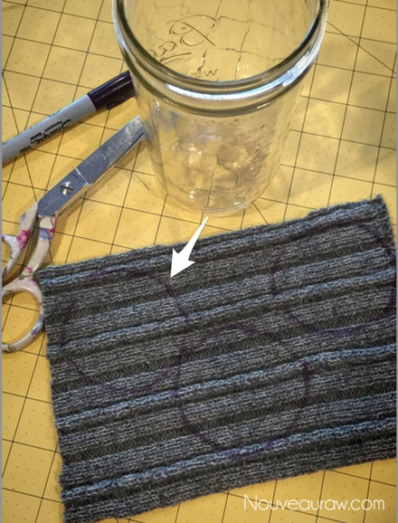
#1 is the cutout circle for the base of the jar. #2 is the piece that will wrap around the jar.
I didn’t use a pattern since each jar was different in size. I just wrapped the sweater around
the jar, pulling it snug to find the width that I would need. Lengthwise I cut it about
1/2″ long to make up for the seam. #3 is what it looks like after it is sewed and turned right-side out.
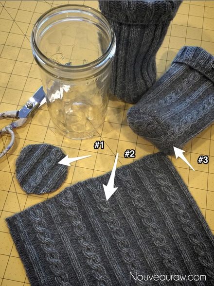
This is the piece that wraps around the jar. Turn the fabric inside out and line up the raw edges.
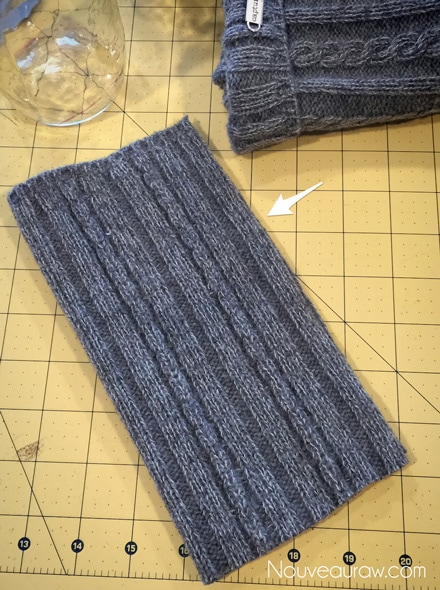
Sew a 1/4″ seam. Remember, don’t pull on the sweater as you sew.
Let the feeder guide it through. It might need a little help, but excessive
tugging will result in broken needles. I have 3 to prove the point. haha
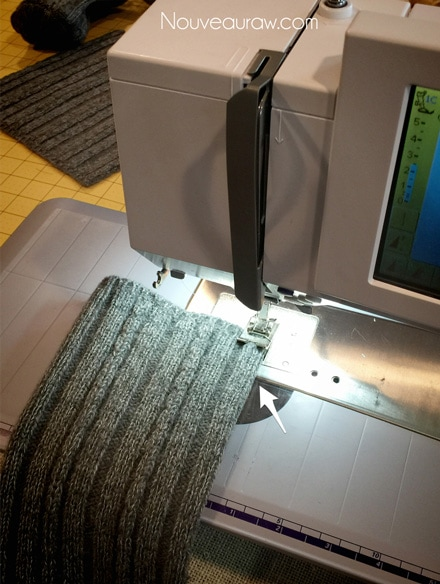
With the sleeve still turned inside-out, pin the bottom circle to the bottom raw edges
of the sleeve. Make sure you place the correct side of the sweater facing the inside,
so that way when you turn it right-side-out, it will be the side that people see…
should they look at the bottom of the jar?
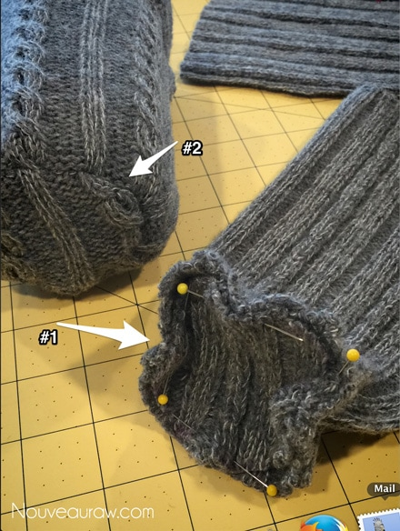
After sewing the edges, trim any excess bulky fibers and then turn it right-side-out.
Slide it onto the jar and give it a tug. You can see how it looks below.
That is the basic idea. I hope you found it helpful. Have fun!
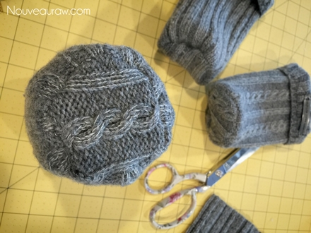
© AmieSue.com